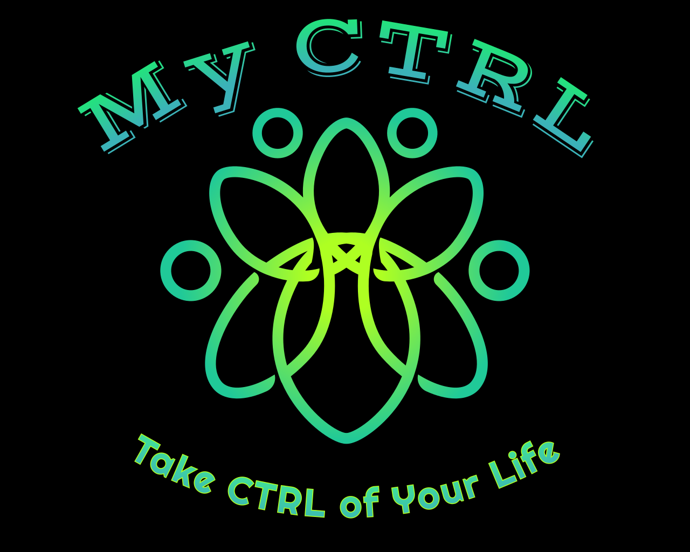

Action Plans
Personalized, prioritized, deadline-aware steps that recalibrate as new information arrives.

Tell us what's going on. We'll help you figure out what's next.
Stephanie George · Founder & CEO · Philadelphia, PA
CTRLWhen life falls apart, the administrative burden becomes the wall. People know they need to act — they don't know what to do first.
Delayed benefits, missed deadlines, evictions, financial loss, and deteriorating mental health.
Replace “I don't know where to start” with “I know exactly what to do next.”
Personalized, prioritized, deadline-aware steps that recalibrate as new information arrives.
A secure, searchable home for documents, timelines, and structured evidence files.
Researched playbooks for job loss, re-entry, eviction prevention, financial reset, and more.
Adults 25–55 navigating job loss, relocation, housing, financial hardship, caregiving, insurance, and paperwork.
Large · painful · underserved
Corrections & re-entry · SUD/behavioral health · workforce · universities · healthcare & social services.
Organization pays per seat. Person receives MyCTRL.
Bottom-up opportunity: facilities × seats × per-seat price, across recurring vertical licenses. We avoid inventing a headline TAM.
Plain-language understanding and personalization at falling cost. The hard part is domain depth — Life Kits, document intelligence, plan logic.
Job changes, housing pressure, and the caregiving crunch leave millions with less support.
Bureaucratic overwhelm and mental health are finally being connected by clinicians, payers, and policymakers.
Re-entry, recovery, and workforce programs are actively seeking tools that show outcomes.
Technology × need × buyer are converging at the same time.
Stephanie George is a single mother, in recovery, and a SUD / behavioral-health therapist pursuing CAADC certification.
She watched clients do the hardest emotional work — then get crushed by benefits forms, housing applications, and court paperwork. So she built the tool she wished existed.
“I built the tool I wished existed when I needed it most.”
Stephanie George · Founder & CEO
Single mother · In recovery · SUD/BH therapist · Philadelphia
mylifectrl.com launched July 22, 2026 on Product Hunt with a free tier.
MyCTRL identity complete; LifeCTRL LLC d/b/a MyCTRL; DBA filed.
Pro bono patent process via Penn State Law; trademark clearance underway with USF CREATE Clinic.
20+ organizations in southeastern PA; Inperium opportunity assessed; pilot offer defined.
Pre-revenue. Pre-seed. The proof-of-work is a live product and documented channel strategy built at near-zero cost.
100 seats · 90 days · $2,500
50% of pilot fee credited toward an annual license. Contracts produce revenue and outcome data that strengthens the next Kit and pitch.
| Category | AI plan | Document org | Curated workflows | Institutional channel |
|---|---|---|---|---|
| Generic AI chatbots | — | — | — | — |
| Task managers | — | — | — | — |
| Human coaching | — | — | — | — |
| Resource portals | — | — | — | — |
| MyCTRL | ✓ | ✓ | ✓ | ✓ |
11 researched frameworks with decisions, deadlines, and jurisdiction awareness.
Organizational memory creates real switching costs.
Institutional pilots, outcome data, and lived-experience credibility.
Pre-seed: ~$250K–$500K
Mentorship, AI/product training, investor introductions, and prize capital for Tara's Circle; investor exposure and strategic intros for PACT.
Capital funds the MVP / AI pipeline, Life Kit library, first 25–100-seat pilot, and 1–2 engineers.
Use of funds
Milestones
MyCTRL becomes the organizational memory of a person's life — not just crisis response, but proactive life management.
Everyone deserves a clear path forward.